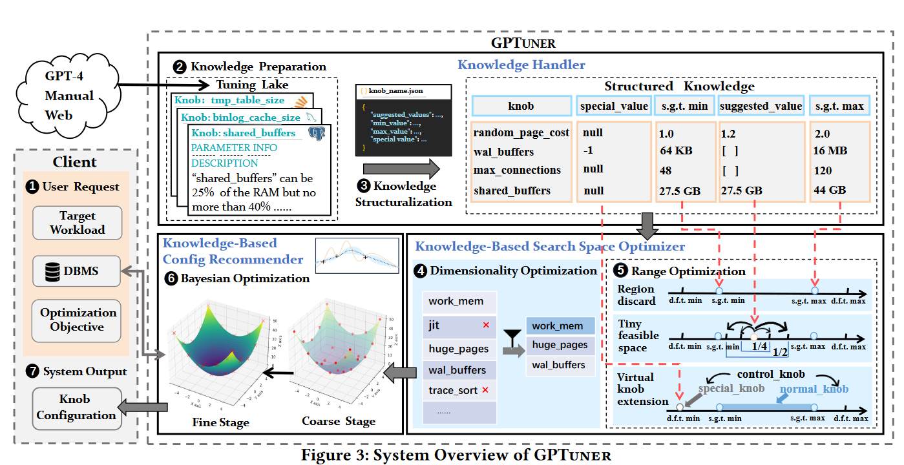
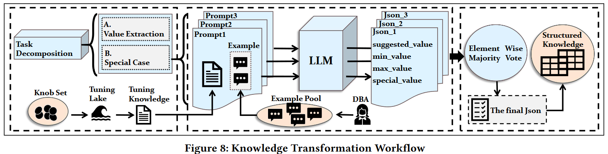

SIGMOD 2023 GPTuner
这是一篇关于GPT增强数据库中旋钮调优任务的论文
https://arxiv.org/abs/2311.03157
Motivation
Existing automatic tuning systems still incur significant tuning costs or only yields sub-optimal performance.
这主要是因为：
- ignore the extensive domain knowledge available (e.g., DBMS manuals and forum discussions)
- only rely on the runtime feedback of benchmark evaluations to guide the optimization
- they utilize the domain knowledge in a limited way
LLM is a notable step forward, but not adequate yet.
- since domain knowledge typically comes in the form of DBMS documents and discussions from DBMS forums, it involves a complex and lengthy workflow to process such heterogeneous and noisy knowledge:
- the brittle nature of LLM (i.e. small modifications to the prompt can cause large variations in the model outputs) and the hallucination problem of LLM(i.e., LLM generates answers that seem correct but are factually false)
Even if structured knowledge is developed, its integration into the optimization process is deficient
将结构化的数据整合进入BO流程存在问题。如果不修改标准工作流程，可以使用的信息是手册推荐的范围约束。但是如果利用建议值和特殊值这两个考虑的内容，则需要创新的优化框架。
Contributions:
- leverages domain knowledge extensively
- automatically to optimize search space
- enhance the runtime feedback-based optimization process
k1 = xx k2 = xx k3 =xx k4 = xx
100 < k1 < 1000
k1 = 100 , k1 =200, k1 =300 ,k1=400
k1 = 256
Deductive Beam Search: Decoding Deducible Rationale for Chain-of-Thought Reasoning
- Self-RAG
- Chain of Thought
- Tree of Thought
- reflection
- react (agent)ReAct: Synergizing Reasoning and Acting in Language Models
Lora 7B 48G
Overview

❶ User provides the DBMS to be tuned (e.g., PostgreSQL or MySQL), the target workload, and the optimization objective (e.g., latency or throughput).
❷ GPTuner collects and refines the heterogeneous knowledge from different sources (e.g., GPT-4, DBMS manuals and web forums) to construct Tuning Lake, a collection of DBMS tuning knowledge.
❸ GPTuner unifies the refined tuning knowledge from Tuning Lake into a** structured view** accessible to machines (e.g., JSON).
❹ GPTuner reduces the search space dimensionality by selecting important knobs to tune
❺ GPTuner optimizes the search space in terms of** the value range for each knob** based on structured knowledge.
❻ GPTuner explores the optimized space via a novel Coarse-to-Fine Bayesian Optimization framework
❼ identifies satisfactory knob configurations within resource limits (e.g., the maximum optimization time or iterations specified by users).
C1 unify a structured view of the heterogeneous domain knowledge while balancing a trade-off between cost and quality.
=>使用LLM收集和提炼异构信息，并结构化表示
Knowledge Preparation
data ingestion
从资源（web forums、GPT、DBMS册）中收集tuning knowledge
data cleaning
建模为二元分类问题，采用LLM解决
针对一个knob，给出候选的tuning knowledge和DBMS的system view；在提示中给出几个例子
=>LLM评估tuning knowledge和system view是否冲突，放弃冲突的知识
data integration
使用LLM，根据信息源的可靠性，手动设置优先级（Manual>Web>LLM），进行整合一个knob的多条tuning信息
data correction
上步由LLM完成的summary任务，可能与事实不符。
使用LLM进行事实一致性检查（prompt: the summarization and the source contents）
=> 不一致，提示GPT重新生成摘要，再次提交摘要和源内容（Mannual、Web、GPT）给GPT，直到GPT识别没有问题
Knowledge Transformation（data extraction）
Attributes：
suggested_values( good staring points for new scenario ), min_value, max_value(默认值过宽，优化过程复杂化，带来系统奔溃的风险 ) and special_value（会导致DBMS不同的行为）
Attribute Values：
Prompt Ensemble Algorithm

- we decompose the transformation task into two subtasks of extracting (1) suggested_values, min_value, max_value and (2) special_value, respectively. Next, we prepare the prompt including examples following the template in Figure 9 for each subtask.
- vary the prompts by changing the examples provided for few-shots learning. 由于LLM的脆弱和幻觉问题，对每个prompt，从手工构建的K(10)个examples随机选取n()3个
- aggregate the results via a majority vote strategy. 对每个属性选择频率最高的值
C2 integrate the knowledge into the optimization process.
使用结构化的数据S：
design a workload-aware and training-free knob selection strategy
Motivation: Existing approaches rely on ML-based algorithms to select important knobs and this requires hundreds to thousands of evaluations on DBMS under different workloads and configurations
使用LLM模拟DBA的旋钮选择：
- System-Level selects knobs based on the specific DBMS product. 提示GPT-4根据DBMS产品推荐调整旋钮
- Workload-Level selects knobs based on the workload type. 根据workload类型和优化目标
- Query-Level selects knobs based on the bottleneck of queries.在提示中包含每个查询的执行计划，LLM选择瓶颈感知旋钮
- Knob-Level complements interdependent knobs to a given target knob set.
develop a search space optimization technique considering the value range of each knob,
对每个维度的数据，舍弃无意义的区域，突出有前景的空间，考虑特殊情况
Region Discard
We utilize min_value and max_value to discard some regions for the following cases：
- The regions are unlikely to result in promising performance.
- The regions could seize too many system resources.对资源相关的knob
- The regions that can make the DBMS crash.对资源相关的knob
Tiny Feasible Space ？
apply a set of multiplicators for each **suggested value V **of all numerical knobs
considering the value range and calculating the multiplicators dynamically
For knob For knob 𝑘, we denote its maximum (minimum) value as 𝑈
The choice of 𝑈 determines the deviation directionand 𝛽 controls the changing extends.
Tiny Feasible Space 离散空间
Virtual Knob Extension
For example, knob “lock_timeout”, with a value range from 0 to 2147483647, controls the maximum allowed duration of any wait for a lock. When it is set to zero, the timeout function is disabled and this makes “0” a special value.
- utilize Structured Knowledge to select which knobs have the special values
- add “virtual knobs” (control_knob, normal_knob and special_knob) for each knob with special value. control_knob为1/0分别表示special_knob(normal_knob)被激活
propose a Coarse-to-Fine Bayesian Optimization Framework to explore the optimized space
本工作主要发现：将领域知识融入优化过程，迭代成本会大大降低
现有的方法依赖于历史结果来使用良好的起点初始化，但是准备这些结果的成本很高并需要在硬件组件和软件版本的变化下进行重建。
the fist stage：
BO只探索整个异构空间的离散子空间Tiny Feasible Space
- ten samples (𝑛 = 10) are generated by Latin Hypercube Sampling (LHS) from Tiny Feasible Space
- the samples are evaluated on DBMS (Line 3) and the surrogate model is initialized
- we explore Tiny Feasible Space with the BO algorithm for C iterations
the second satge
- we bootstrap BO with the samples from the first stage
- we narrow down space P with the Region Discard technique
- we take into account the knobs with special values with the Virtual Knob Extension technique
EXPERIMENTAL EVALUATION
baseline: GPTuner is implemented with SMAC3 library and uses OpenAI completion API of GPT-4.
We run three tuning sessions for each method, with each session consisting of **100 iterations **and each iteration requires a stress test for the target workload.
For BO-based methods, we follow the setting of iTuned [12] and OtterTune [50] by **executing 10 configurations **generated by Latin Hypercube Sampling (LHS) [31] to initialize the surrogate model.
For RL-based methods, we follow recent works [4, 48] and do not train the neural network since it is evaluated that the trained network suffers from over-fitting [57].
SIGMOD 2023 GPTuner